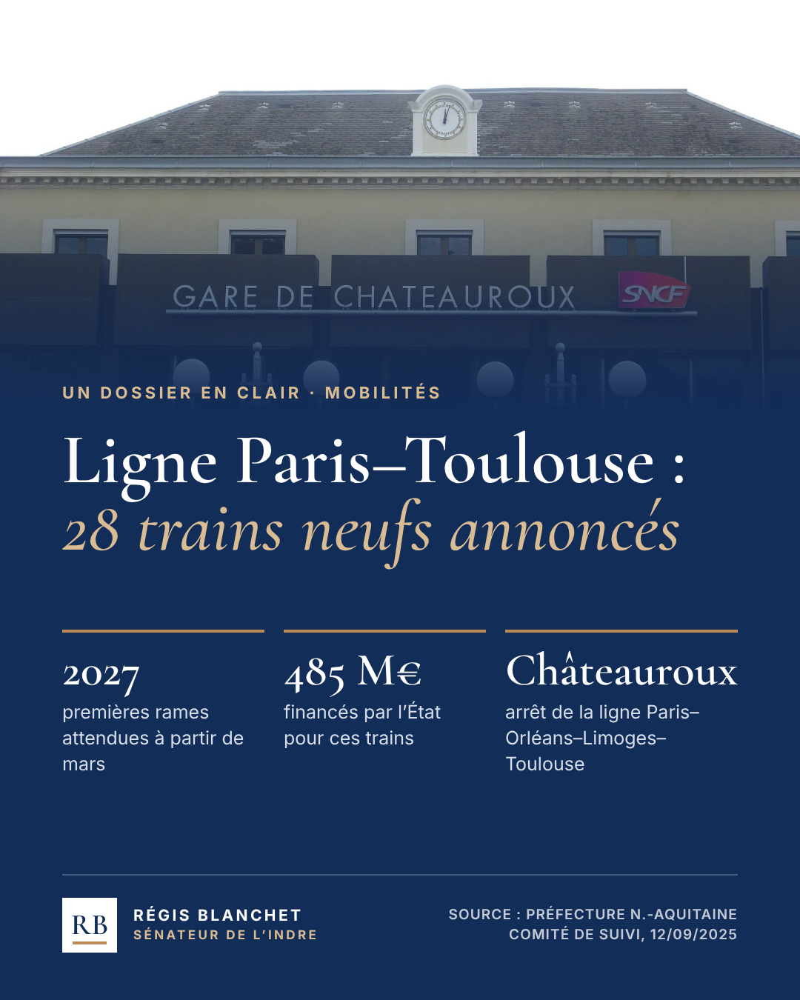
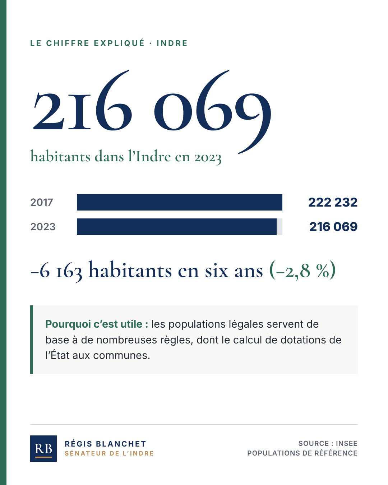
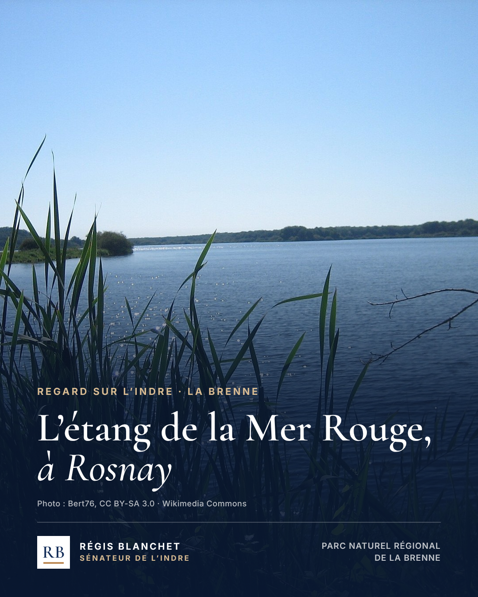
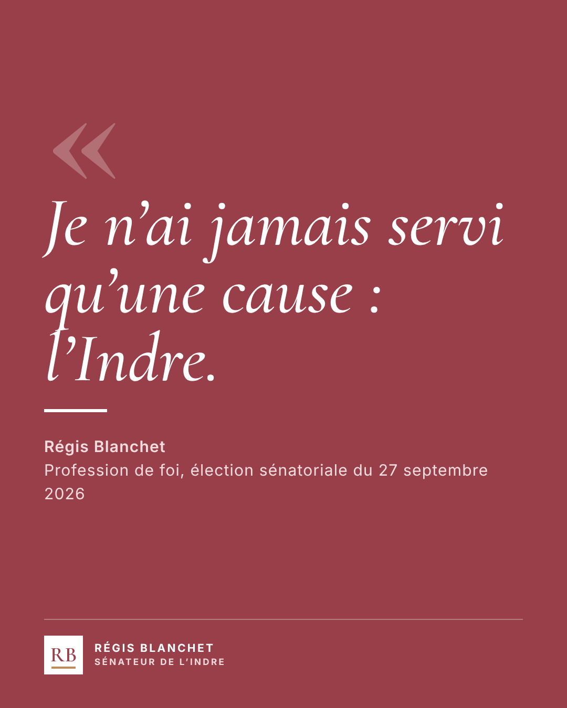
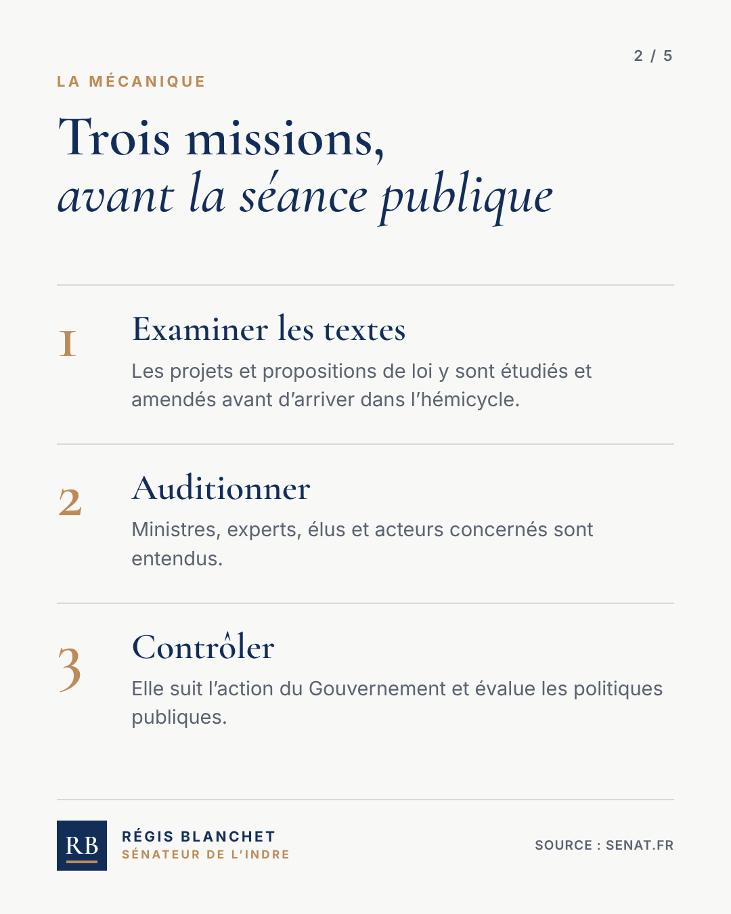

Réseaux sociaux · maquettes au format réel 1080 × 1350
Un réseau, un rôle, une même signature
Chaque réseau a son public. On n’y publie pas la même chose, mais tout se reconnaît au premier coup d’œil : bleu nuit, filet bronze, monogramme RB, source en pied.
Instagram · carrousel pédagogique
9:41●●● ▮
RB
regisblanchet.senateurPalais du Luxembourg, Paris
···
♡ ◯ ➤⌑
regisblanchet.senateur Au Sénat, beaucoup se joue en commission. Explications 👉 #Sénat #Indre
Instagram : expliquer
Le public le plus jeune : 4 à 5 cartes pour comprendre le Sénat.
Au Sénat, concrètement1 / semaine
Facebook · l’Indre et ses habitants
9:41●●● ▮
facebook⌕ ☰
RB
Régis BlanchetSénateur de l’Indre · 2 h · 🌐
Régis Blanchet et sa suppléante, Géraldine Rouah. Chaque semaine, une commune ou une rencontre de l’Indre.
👍❤️ 24836 commentaires · 19 partages
👍 J’aime💬 Commenter↗ Partager
Facebook : être présent
Habitants et maires : terrain et communes, en photos datées et légendées.
Regard sur l’Indre1 à 2 / semaine
LinkedIn · un dossier en clair
9:41●●● ▮
inRechercher
RB
Régis BlanchetSénateur de l’Indre · Commission de l’aménagement du territoire
Ligne POLT : ce qui est annoncé, ce qui reste à suivre. Dossier en 5 pages, sources incluses.

Document · 1 / 5👍💡 11214 commentaires · 9 republications
👍 J’aime💬 Commenter⇄ Republier➤ Envoyer
LinkedIn : suivre les dossiers
Élus, entreprises, presse : les dossiers suivis, chiffrés et sourcés.
Un dossier en clair1 / 2 semaines
La cohérence sur la durée
Neuf publications, une identité qui se voit
9:41●●● ▮
regisblanchet.senateur ⌄
RB
9publications
—abonnés
—suivi(e)s
Régis Blanchet
Sénateur de l’Indre · Union Centriste et Indépendants
Commission de l’aménagement du territoire et du développement durable
senat.fr/senateur/blanchet_regis21652w
Au Sénat
L’Indre
Chiffres
La lettre




Expliquer · bleu nuit
« Au Sénat, concrètement » : une question, la mécanique, le lien avec l’Indre, la source. Photo de l’hémicycle ou du Palais en fond.
Montrer · photo pleine page
« Regard sur l’Indre » : un lieu, une rencontre, une commune. Une photo réelle, datée, créditée — jamais d’image générée.
Suivre · chiffres et dossiers
« Le chiffre expliqué » et « Un dossier en clair » : une donnée sourcée, ce qui est établi, ce qui reste à suivre.
Sa parole · bordeaux
Une citation uniquement quand elle est de lui et validée. Exemple : sa profession de foi de septembre 2026.
Photos : hémicycle (Tangopaso, domaine public), Palais du Luxembourg (JLPC, CC BY-SA 3.0), gare de Châteauroux (Fab5669, CC BY-SA 4.0), étang de la Mer Rouge (Bert76, CC BY-SA 3.0), portrait de campagne. Format recommandé 2026 : 1080 × 1350 (4:5), réutilisable sur Instagram, Facebook et en document LinkedIn.
Le rythme pilote proposé
Un mois type, quatre rendez-vous
Une publication principale par semaine, déclinée selon les réseaux, et la lettre en fin de mois. Tenable avec l’équipe actuelle.
SEMAINE 1
Au Sénat, concrètement
Un mécanisme expliqué : commission, question écrite, navette, loi de finances…
InstagramFacebook
SEMAINE 2
Regard sur l’Indre
Une rencontre ou une commune, avec photo de terrain, date et interlocuteurs.
FacebookInstagram
SEMAINE 3
Un dossier en clair
Un sujet suivi au Sénat : faits établis, calendrier, prochaine étape.
LinkedInFacebook
SEMAINE 4
La lettre du mois
Le bilan en quatre pages, en PDF sur le site, annoncé sur les trois réseaux.
LinkedInFacebookInsta
PréparerLe lundi : sujet, faits, photos et sources réunis par l’équipe.
ValiderLes faits par les référents ; la parole et les positions par le sénateur ou son délégataire.
Publier et archiverLe vendredi au plus tard ; chaque contenu rejoint le site.